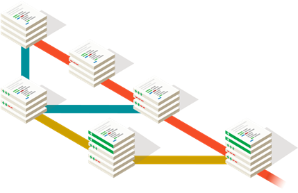

Artículo 1
Durante muchos años, la Web ha dependido de plug-ins externos para entregar atributos que no podían ser soportados nativamente por el navegador Web, particularmente en términos de dibujo en 2D, animación y multimedia. Las últimas versiones de la especificación HTML y CSS apuntan a eliminar la necesidad de estos componentes adicionales de navegador, y también a reducir la cantidad de JavaScript necesario (o a eliminar la necesidad de JavaScript completamente, en algunos casos), para cosas tan triviales como arrastrar y soltar filas, escritura en bandas de filas, y más. Siga esta sección para aprender cómo aprovechar el HTML5 y CSS3 en la creación de contenidos en formato web (Páginas y Sitios Web).